Descobreix les característiques i funcionalitats de la nostra aplicació
MindSpeak ofereix experiències personalitzades per a diferents tipus d'usuaris
Accés senzill amb usuari i contrasenya
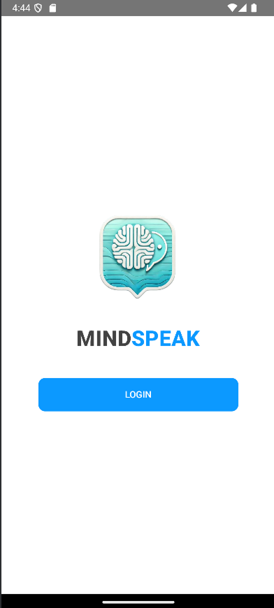
Selecció visual d'emocions
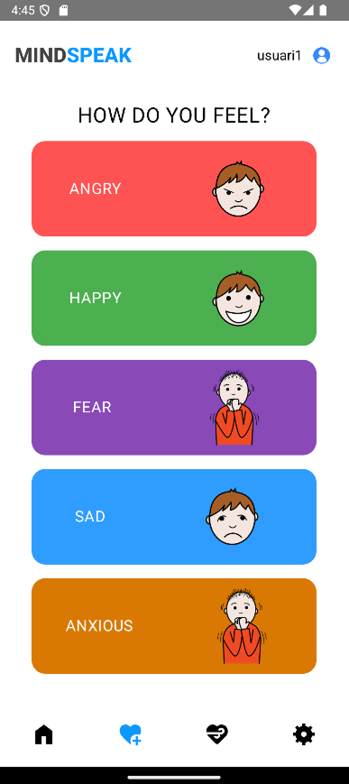
Afegir imatge, video o descripció amb intensitat
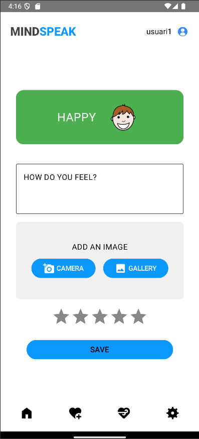
Veure registres d'emocions anteriors
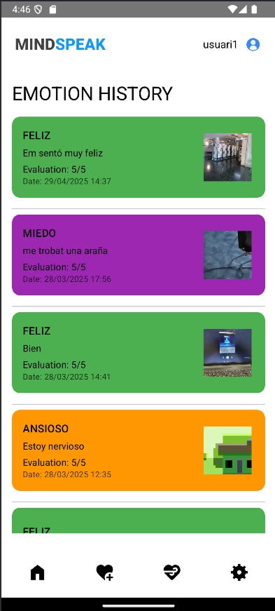
Accés com a supervisor o familiar
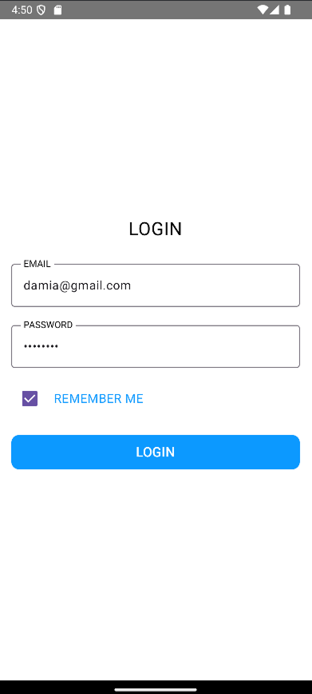
Notificacions quan l'usuari registra emocions
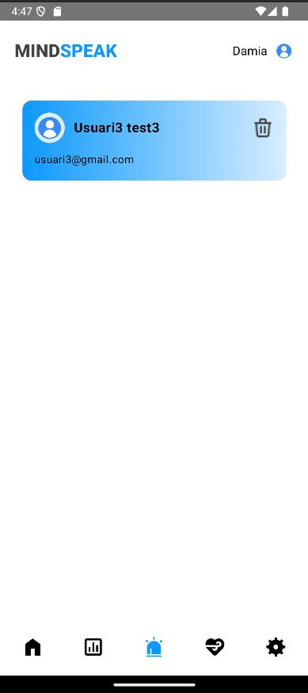
Anàlisi de tendències emocionals
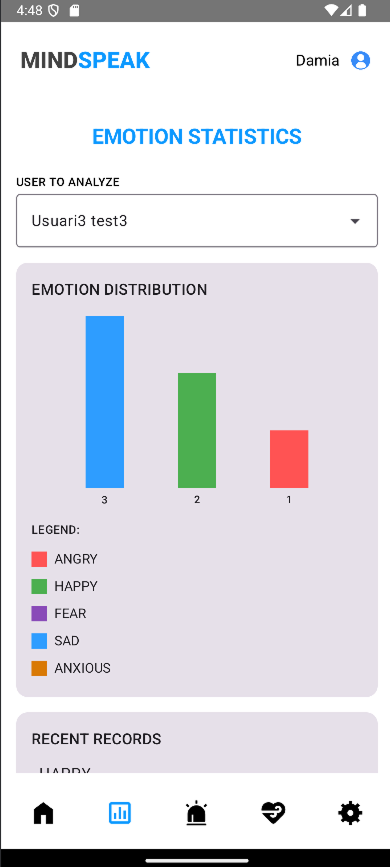
Pujar recursos personalitzats
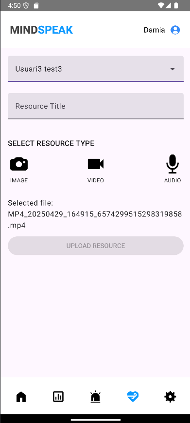
MindSpeak ofereix una sèrie de funcionalitats dissenyades per millorar la comunicació emocional
Interfície visual i intuïtiva per seleccionar diferents tipus d'emocions amb imatges representatives i colors associats.
Registre cronològic de totes les emocions expressades, amb data, hora i descripció.
Notificacions a supervisors i familiars quan l'usuari registra una nova emoció.
Gràfics i estadístiques sobre les emocions registrades per analitzar tendències i patrons.
Recursos i activitats per ajudar a gestionar les emocions, personalitzables pels supervisors.
Protecció de les dades personals i emocionals dels usuaris amb mesures de seguretat avançades.
Un cop d'ull a la tecnologia darrere de MindSpeak
MindSpeak utilitza una arquitectura en capes que separa la interfície d'usuari, la lògica de negoci i l'accés a dades. Aquesta estructura modular facilita el manteniment i l'expansió de l'aplicació.
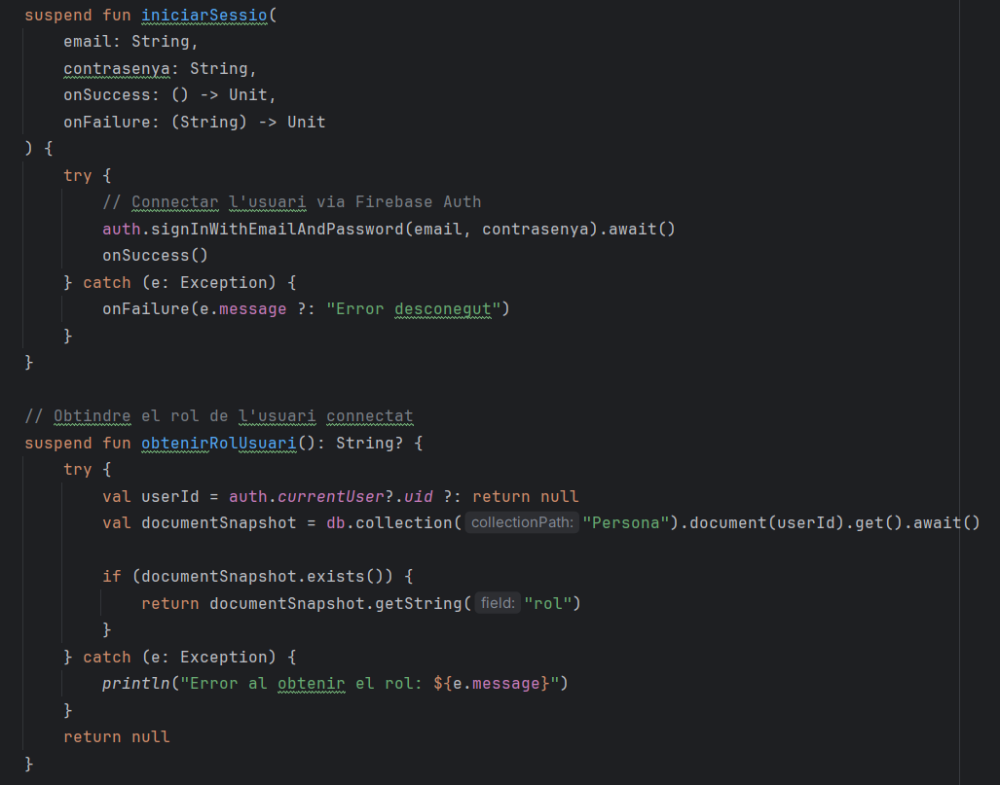
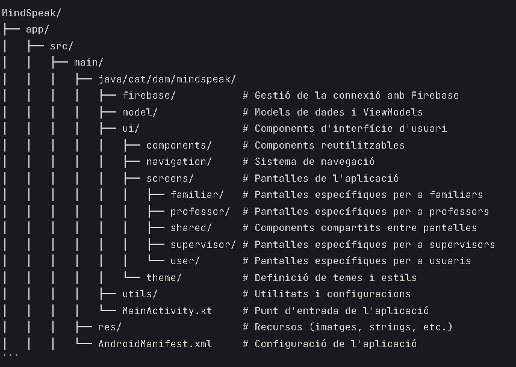
Estructura de capes i components de l'aplicació
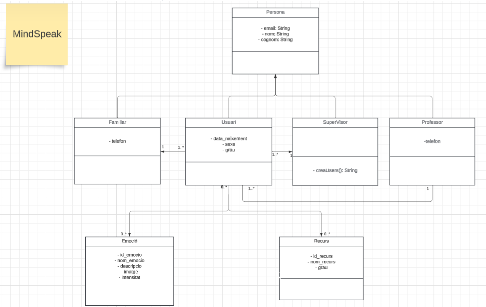
Relacions entre les entitats principals del sistema
Descarrega l'aplicació ara i descobreix com pot ajudar a millorar la comunicació emocional.